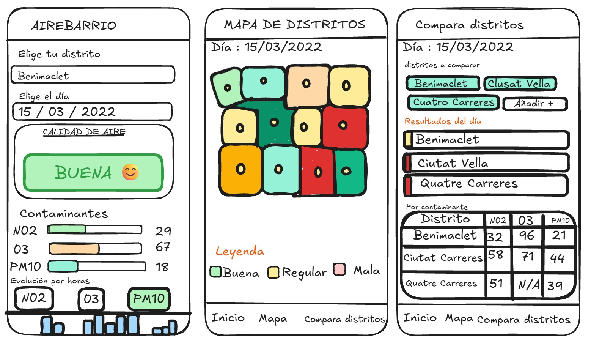

Grupo: Group04 | Hands-on 1 – Selección de datasets y requisitos de la aplicación
Nuestra aplicación se llama AireBarrio València y sirve para que cualquier persona pueda ver qué tal está el aire en su barrio. Lo que pasa hoy es que los datos de contaminación existen, pero están en archivos con nombres de estaciones y códigos que casi nadie entiende, y la gente normalmente no sabe en qué estación le «toca» su casa. Nosotros queremos que alguien pueda elegir su distrito, ver un resultado claro (buena, regular o mala) y, si le interesa, mirar el detalle de cada contaminante.
Para conseguirlo usamos los dos datasets que ya seleccionamos en el documento de requisitos de los datasets: el de calidad del aire (D1), que nos da las mediciones, y el de distritos (D2), que nos da los barrios. Juntándolos podemos pasar de «la estación X ha medido tal valor» a «en el distrito Y el aire estuvo así».
| Tipo de usuario | Qué quiere hacer |
|---|---|
| Vecinos y vecinas | Saber de forma rápida cómo estaba el aire en su barrio, sin tener que entender tablas técnicas. |
| Personas que hacen deporte al aire libre | Mirar a qué horas hubo menos contaminación para decidir cuándo salir a correr o a pasear en bici. |
| Familias y personas sensibles (asma, mayores, niños) | Comparar su distrito con otros y tener una idea de qué zonas suelen tener peor aire. |
| Estudiantes o periodistas | Consultar los datos de forma sencilla y comparar zonas de la ciudad para un trabajo o una noticia. |
| Dataset | Para qué lo usamos |
|---|---|
| D1 – Calidad del aire de València (2021–2022) | Valores horarios de contaminantes (como NO2, O3 o PM10) por estación. Es la base de todo lo que se muestra: el resultado del día, las barras de cada contaminante y la gráfica por horas. |
| D2 – Distritos de València | Nombres y formas (geometría) de los distritos. Con esto dibujamos el mapa y asignamos cada estación al distrito donde está. |
Cómo los combinamos: primero localizamos cada estación en el mapa y vemos dentro de qué distrito cae. A partir de ahí, las mediciones de esa estación se atribuyen a ese distrito. Si un distrito tiene varias estaciones, se puede hacer una media; si no tiene ninguna, la app usará la estación más cercana y lo avisará al usuario (así no damos la impresión de que se ha medido en su calle cuando no es verdad).
| Id | Requisito | Pantalla |
|---|---|---|
| RF1 | El usuario puede elegir un distrito de València en una lista desplegable. | Inicio |
| RF2 | El usuario puede elegir una fecha dentro del periodo cubierto por los datos (2021–2022). | Inicio |
| RF3 | La app muestra un resultado general del día para ese distrito (buena, regular o mala) con un color fácil de entender. | Inicio |
| RF4 | La app indica qué estación se ha usado para calcular el resultado. | Inicio |
| RF5 | La app muestra el valor de cada contaminante principal (por ejemplo NO2, O3 y PM10) con una barra de color. | Inicio |
| RF6 | La app muestra una gráfica de cómo ha evolucionado un contaminante a lo largo de las horas del día. | Evolución horas |
| RF7 | La app muestra un mapa de los distritos coloreados según su calidad del aire, con las estaciones marcadas. | Mapa |
| RF8 | Al tocar un distrito en el mapa, la app lleva al usuario a la información de ese distrito. | Mapa |
| RF9 | El usuario puede comparar dos o más distritos para una misma fecha. | Futura (no incluida en el boceto) |
| RF10 | Si faltan datos (estación sin medición, hora vacía, contaminante que no se mide), la app lo dice claramente en vez de enseñar un cero o dejarlo en blanco. | Todas |
| RF11 | La app muestra siempre la fuente de los datos (Ajuntament de València, CC BY 4.0). | Todas |

Inicio: el usuario elige distrito y día; la app muestra el resultado general (buena, regular o mala) y una barra por contaminante (NO2, O3, PM10).
Mapa de distritos: mapa de València con los distritos, las estaciones marcadas y una leyenda de colores.
Evolución horas: pestaña de la barra de navegación para ver la evolución de un contaminante a lo largo del día (pantalla pendiente de dibujar).
En el documento de los datasets vimos que los datos no son perfectos, y eso afecta directamente a la app:
AireBarrio València aprovecha los dos datasets elegidos para convertir datos técnicos en información que cualquiera puede entender: los distritos (D2) ponen el «dónde» y la calidad del aire (D1) pone el «cómo está». Tenemos claro qué pantallas queremos, qué debe hacer la app y qué problemas de los datos habrá que resolver antes de construirla.
Fuente de los datos: © Ajuntament de València, portal de datos abiertos (VLCi), bajo licencia CC BY 4.0.